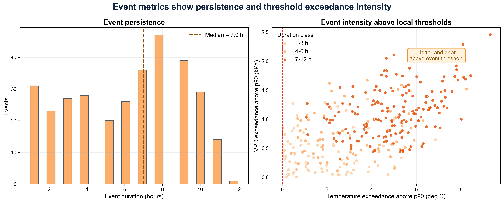

Detect compound hot-dry stress events relevant to agricultural, water-resource, and public-health risk.
Hourly station data, temperature, derived vapor pressure deficit, rolling precipitation windows, NOAA impact context.
Quality control, percentile thresholds, rolling-window precipitation deficits, event duration and intensity metrics.
Event catalog, threshold diagnostics, duration-intensity plots, and impact-context figures.
This project extends single-hazard climate analysis into compound-risk detection, using physical variables that connect atmospheric moisture demand and precipitation deficits to decision-relevant impacts.

Workflow for station QC, VPD derivation, threshold detection, and impact-context comparison.

Duration and intensity diagnostics for identified compound heat-dryness events.